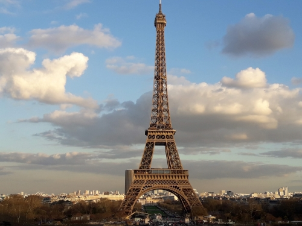
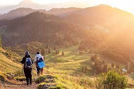

Tips y noticias del mundo
Tips
Viajar sola: un encuentro con uno mismo

Viajar sola puede sonar un tanto perturbador o inquietante para algunas personas, pero siempre enfrentarnos a situaciones por fuera de lo cotidiano son una grandiosa oportunidad de autoconocimiento y de trabajar la confianza en uno mismo. Puede sonar trillado, pero te aseguro que la persona que se va, nunca es la misma persona que regresa.
Que ver en NY en 10 dias

Desde pasear por escenarios de película a contemplarla desde las alturas, la ciudad que nunca duerme siempre te espera con los brazos abiertos. Con sus numerosas atracciones y sitios por conocer puede parecer que recorrerla en 10 días suene imposible, pero con un poco de organización y ánimo podemos disfrutar al máximo y sacarle el jugo a “la gran manzana”.
Paris cuando el tiempo apremia: 4 dias en "la ville lumiere"
Una ciudad hermosa que me ha dejado sin palabras cada vez que la he visitado, de esas que no te cansan jamás y en las que siempre se puede encontrar un rinconcito nuevo. 4 días es un tiempo óptimo para conocer las principales atracciones de la capital francesa, así como también para caminar sus parques y degustar su extraordinaria gastronomía.
Noticias
Dolar Qatar
También conocido como dólar turista, es el tipo de cambio que se emplea para el pago de consumos con tarjetas de débito y crédito en el exterior, así como para la compra de divisa extranjera y pasajes y paquetes hacia destinos internacionales. Se trata de la adición de un 30% de impuesto País, un 45% de percepciones a cuenta de ganancias y un 25% a cuenta de bienes personales por sobre el dólar oficial.

Ecoturismo: ¿cual es la huella de carbono en tus viajes?
El turismo suele ser visto como una actividad de masas, en la que grupos numerosos llegan a un lugar, pasan unas horas y se van sin considerar el impacto ambiental de su visita. Esta perspectiva intenta impulsarnos a realizar viajes más responsables y respetuosos con el entorno natural y con las demás personas sin dejar de disfrutar de lo maravilloso de conocer y explorar.
